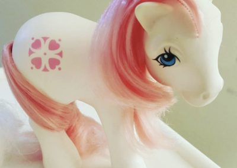

|
Los Bronys y las pegasisters son adultos que conforman
la mayor parte de la base de fans de My Little Pony: Friendship is Magic.
El Fandom inicio en el sitio web 4Chan, mas especificamente
en el tablon /co/ (Comics & Cartoons)
Alli, muchos comenzaron a autodenominarse de esa forma,
realizando una mezcla de las palabras
Brother (Hermano), y Pony, connotando que al ser fan de la serie,
formabas parte de una familia.
Logicamente no se olvidaron de las mujeres, unieron Pegaso y Sister,
creando la palabra Pegasister (aunque no es muy utillizada)
Cabe aclarar que no son furrys!!!
Existe una diferencia entre ser un pony y una zorrita antropomórfica.
|

|